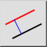

Parallell (med avstand)
Verktøylinje/ikon:


Meny: Tegn > Linje > Parallell (med avstand)
Snarveier: L, P | P, A
Kommandoer: lineparallel | lineoffset | parallel | par | lp | pa
Beskrivelse
Med dette verktøyet kan du opprette paralleller til eksisterende linjer (eller konsentriske buer og sirkler).
Bruk
- Velg ønsket linjetype i verktøylinjen for alternativer.
- Skriv inn avstanden til det konsentriske eller parallelle objektet fra det opprinnelige objektet i verktøylinjen for alternativer som vises øverst.
- Skriv inn antallet parallelle eller konsentriske objekter som skal opprettes i verktøylinjen for alternativer.
- Klikk på basisobjektet. De parallelle eller konsentriske objektene opprettes på den siden som musepekeren befinner seg på når du velger objektet.